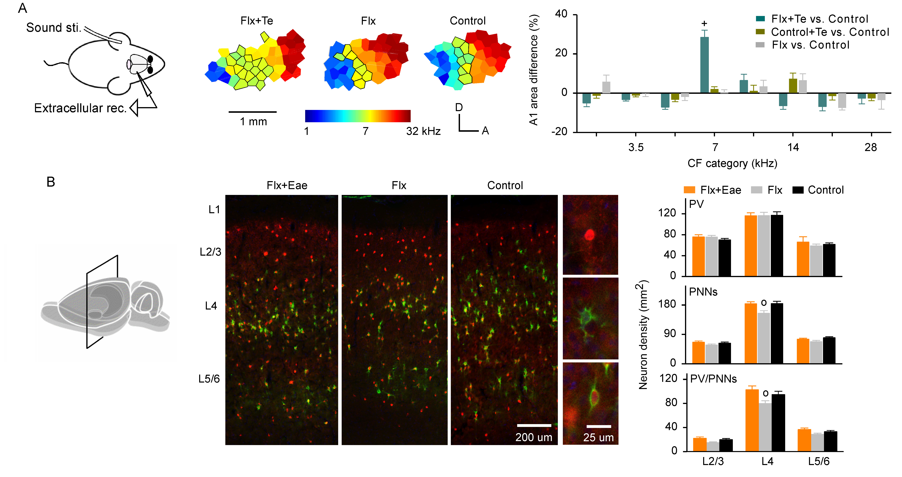

The primary objective of the Zhou Lab's research is to understand how experience (training) rewires the brain. Specifically, they are employing behavioral, electrophysiological, and molecular techniques to investigate the experience-based plasticity in the auditory cortex of model animals. They are also developing novel training strategies for remediating deficits in cortical information processing. These studies can aid in the development of new treatment strategies for hearing impairment and other neurological disorders, including autism.
